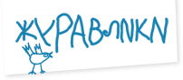

<!DOCTYPE HTML>
<html lang="en-US">
<head>
    <meta charset="UTF-8">
    <title>Friends - Juravliki</title>
    <link rel="stylesheet" href="style.css">

</head>
<body class="friends-page">

<!-- .l-main -->
<div class="l-main">

    <!-- header -->
    <header>
        <div class="b-logo">
            <a href="/"></a>
        </div>
        <div class="b-menu">
            <h1>Акция Благотворительного Фонда «Настенька»</h1>
            <ul class="clearfix">
                <li><a href="about_project.html">О проекте</a></li>
                <li><a href="about_fond.html">О фонде</a></li>
                <li><a href="list.html">Лента пожеланий</a></li>
                <li><a href="about_partner.html">О партнерах</a></li>
                <li class="current"><a href="friends.html">Сообщество друзей «Настеньки»</a></li>
            </ul>
        </div>
        <div class="b-fondlogo">
            <a href="#"></a>
        </div>
        <div style="clear:both;">&nbsp;</div>
    </header>
    <!-- /header -->

    <div class="l-content">
        <!-- .b-friends -->
        <div class="b-friends">
            <div class="b-friends-blockquote">
                <div class="triangles-content-top"></div>
                <div class="b-friends-blockquote-content">
                    <p class="b-friends-bloquite-text">«Я давно хочу помогать больным детям. Каждый месяц я могу передавать 1000 р. Но я знаю, проблемы такие большие, что мои деньги никому не помогут – нужны миллионы...»</p>
                    <p class="b-friends-blockquote-textauthor">Наталья, 40 лет, преподаватель, г. Москва</p>
                </div>
                <div class="triangles-content-bottom"></div>
            </div>
            <div class="b-friends-text">
                <p>«Миллион людей думает так, как Наталья. Если каждый из них пришлёт даже не 1000, а 100 рублей, то получится 100 000 000 рублей. Не передавая свои пожертвования, мы лишаем больных детей помощи в сотни миллионов рублей», – подумали мы.</p>
                <p>Так у нас родилась идея создать Сообщество Друзей «Настеньки». Сообщество объединит всех неравнодушных людей, вносящих регулярные благотворительные взносы. Пожертвования членов Сообщества образуют стабильный фонд средств на приобретение жизненно важных лекарств и медицинского оборудования, а также материальную помощь семьям детей, больных раком. Именно благодаря помощи частных лиц, Фонд смог приобрести для НИИ детской онкологии и гематологии 2 аппарата искусственного дыхания (1 200 000 руб. каждый), рентген аппарат (487 500 руб.), сепаратор крови (2 625 000 руб.), наркозный аппарат (1 750 000 руб.) и многое другое. Мы очень благодарны людям, которые нам в этом помогли!</p>

                <p class="main-words">Вступая в Сообщество, ты тоже внесешь свой вклад в спасение жизни детей! Вместе мы можем сделать очень многое! Нам не хватает только тебя!</p>
            </div>
            <div class="b-friends-link">
                <a href="payment.html"><span class="b-friends-link-text">стать другом «настеньки»</span><span class="b-friends-link-arr">&rarr;</span></a>
            </div>
        </div>
        <!-- /.b-friends -->
    </div>

    <!-- .b-counter -->
    <!--<div class="b-counter">-->
    <!--<div><span class="b-counter-count">00109<span style="color: #f7941d;">5</span></span><span class="b-counter-text">журавлика собрано</span></div>-->
    <!--</div>-->
    <!-- /.b-counter -->

    <!-- footer -->
    <footer>
        <div class="clearfix">
            <div class="b-social">&nbsp;</div>
            <div class="b-copy">
                <p>&copy; Благотворительный фонд «Настенька». Все права защищены.</p>
            </div>
            <div class="b-sponsor"></div>
        </div>
    </footer>
    <!-- /footer -->

</div>
<!-- /.l-main -->
<script type="text/javascript" src="js/jquery.js"></script>
<script type="text/javascript" src="js/script.js"></script>
</body>
</html>